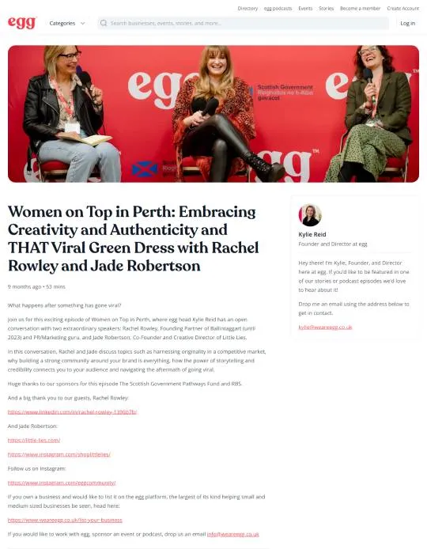
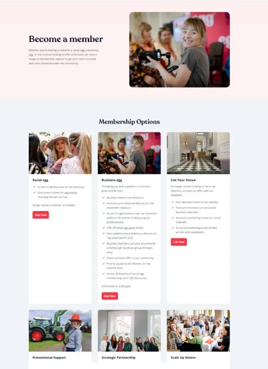
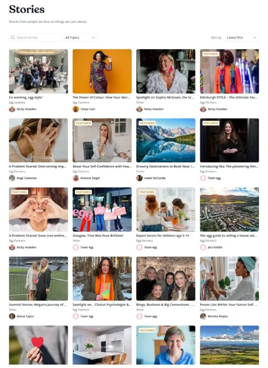
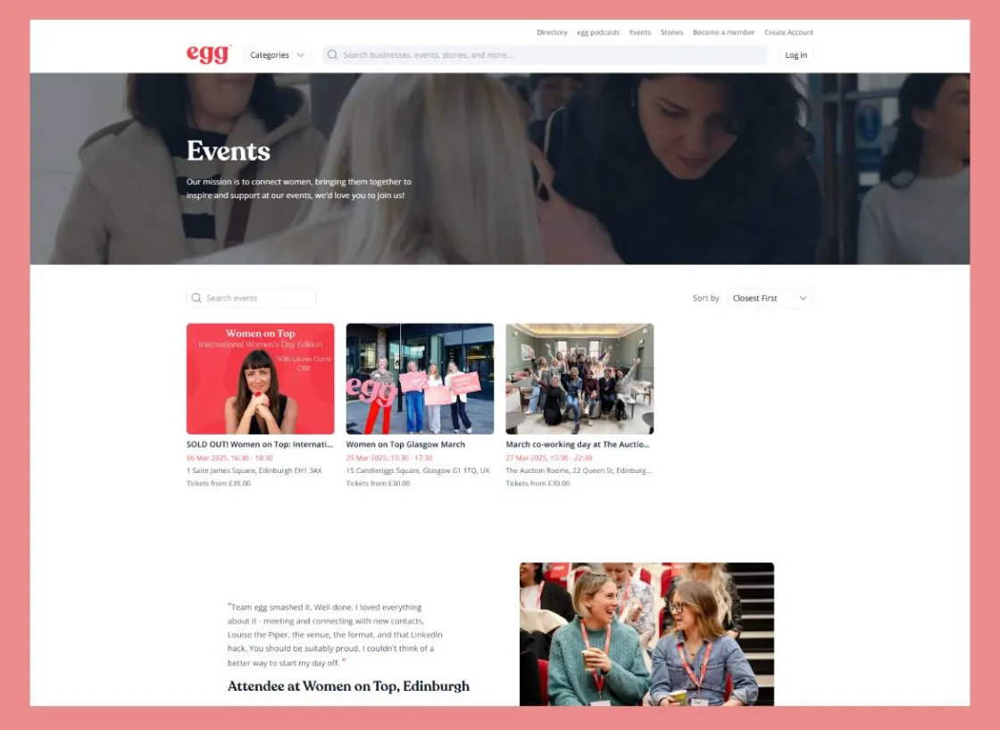

Website Development For We Are Egg
WeAreEgg is a creative agency that specializes in providing brands in a variety of industries with dynamic digital experiences. In order to create a more engaging and user-friendly platform, they wanted to redesign their current website. Their main goal was to create a scalable, contemporary website that would showcase their inventiveness and make content management simple.
Using .NET and Contentful, Cloud Converge helped WeAreEgg transition to a more adaptable and scalable solution. Through this migration, they were able to provide more flexibility and ease of content management by integrating a headless CMS (Contentful) with their current backend system, which was built on .NET.

Challenge & Solution
WeAreEgg’s capacity to scale and effectively manage content was being constrained by their prior website platform. The customer needed a high-performing, adaptable solution that would let them scale as their company expanded, integrate with multiple APIs, and manage their content with ease.
Cloud Converge used Contentful as the content management system and .NET for the backend system to plan and carry out the transition from the outdated platform to a more contemporary, scalable solution. This gave WeAreEgg total control over their content without sacrificing scalability or performance.
Headless CMS Integration With Contentful
WeAreEgg now has greater control over the content of their website thanks to the implementation of Contentful, a headless CMS. They could effortlessly deliver content across various channels and manage and organize it with Contentful, guaranteeing.
User Experience Design & Backend Integration
The WeAreEgg website was designed with the goal of providing a contemporary and user-friendly experience. To make sure the site was interesting to users, we placed a strong emphasis on simple navigation, clean design, and quick load times. WeAreEgg was able to easily add new features or modify functionality as needed thanks to the website’s increased customizability following the integration of .NET.
To guarantee a seamless user experience across all platforms, the website was optimized for both desktop and mobile devices. Whether users were using a desktop, tablet, or smartphone, we made sure they had the greatest experience possible by employing a mobile-first design approach.


Result
By moving to .NET and Contentful, WeAreEgg was given a modern, scalable platform that could grow with them. The CMS integrated with .NET gave the team the confidence to manage and update content without waiting for a developer every time, allowing them to respond to market needs rapidly.
The clean aesthetic of the website combined with the flexible .NET backend allowed WeAreEgg to deliver a consistent user experience. By utilising a headless CMS through Contentful, WeAreEgg improved their content workflows, and productivity, and gained more control over how the website’s content was presented.

Conclusion
WeAreEgg’s digital experience has been completely changed by the successful transition to .NET and Contentful, which has made it possible for them to provide a platform that is highly manageable, scalable, and engaging. As the business’s needs grew, the integrated solution gave WeAreEgg the flexibility to adapt and stay competitive in the rapidly evolving digital market.
WeAreEgg now has the resources necessary to grow their company, effectively manage content, and offer their clients first-rate digital experiences thanks to the new website. To keep the website at the forefront of both technology and user experience, Cloud Converge keeps up its support.